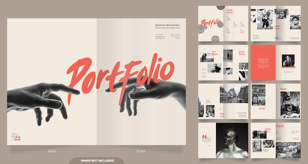
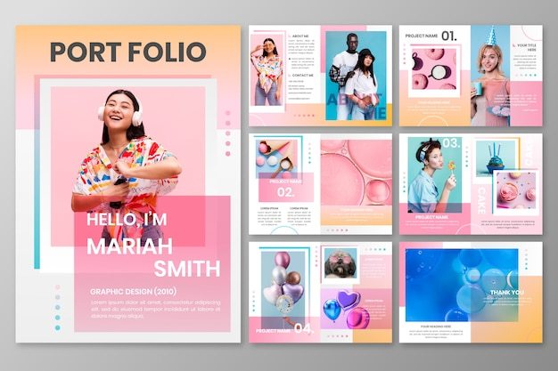
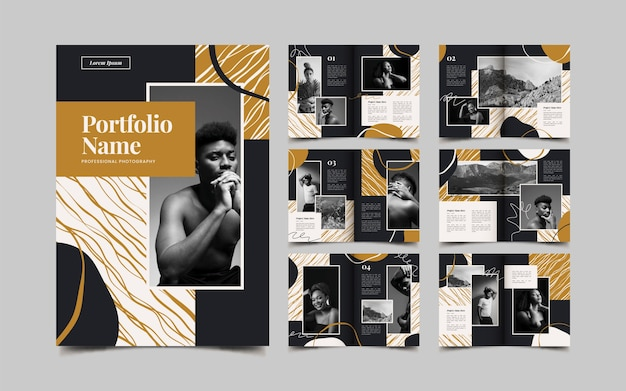
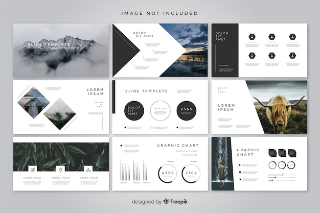
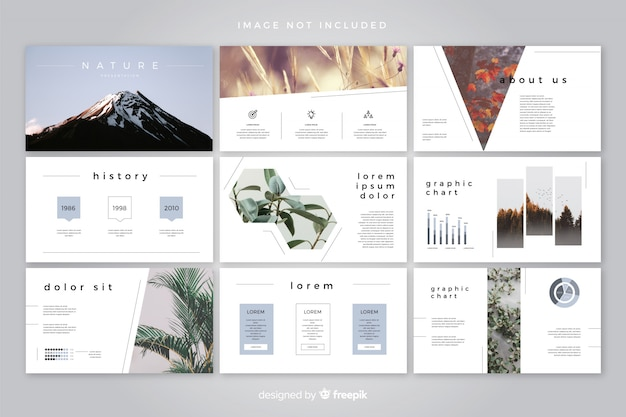
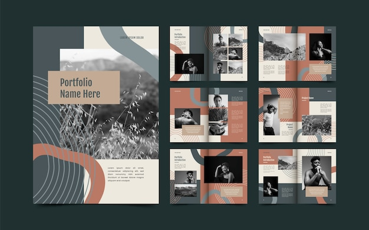
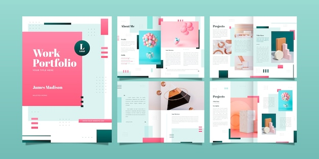
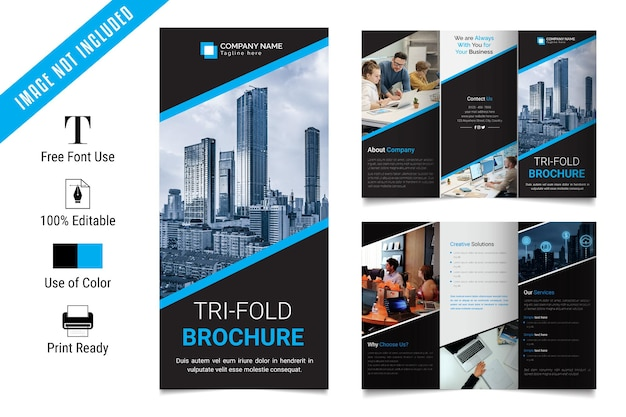
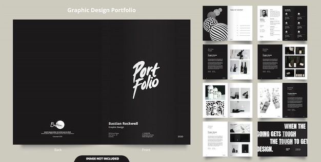
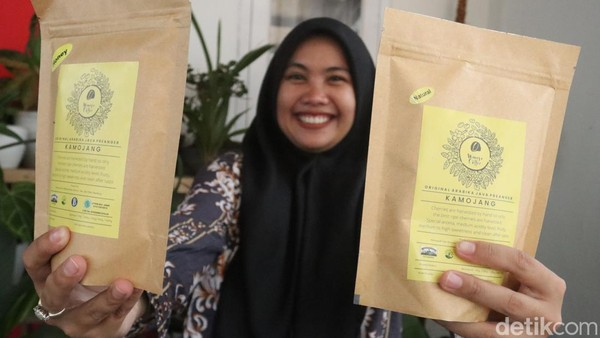

Hallo, Selamat Datang Sahabat
Saya Masih Belajar
necessitatibuserat viris ullamcorper et suavitate falli eloquentiam mazim nihil repudiare
About Me
Hallo,Nama Saya IRFAN ABADI. Saya Masih Belajar Membuat Web, Semoga Bermanfaat
Terima Kasih
Portpolio









Blog

Baca Lagi
- Bandung - Warga yang tinggal di Negeri
- Sakura alias Jepang bisa mencicipi
- nikmatnya Kopi Wanoja Kamojang yang
- diproduksi Kelompok Tani Wanoja.
Kopi Wanoja
- Industri otomotif terus berinovasi seiring
- berkembangnya teknologi yang kian canggih.
- Selain mempertimbangkan teknologi canggih,
- kini produksi mobil juga mempertimbangkan
Otomotif
- Sobat Pesona tentu saja pernah mencicipi kuliner
- yang satu ini, bukan? Pasalnya, makanan yang satu
- ini menjadi salah satu sajian utama di setiap
- Rumah Makan Padang yang ada di seluruh penjuru negeri.
Rendang
Our Team

Ardi
Coki
Dony
Sabli